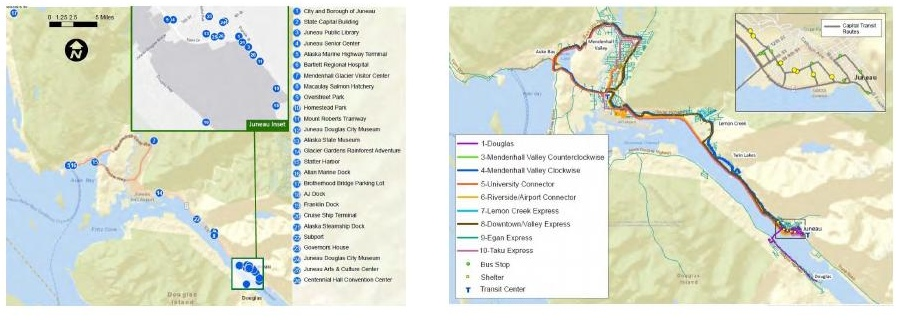
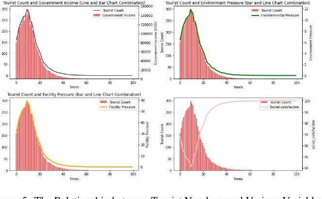
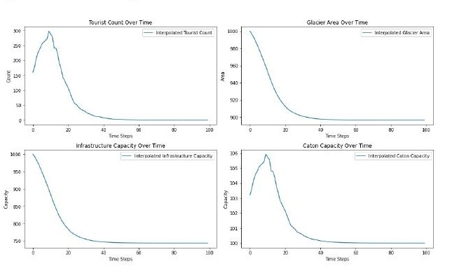
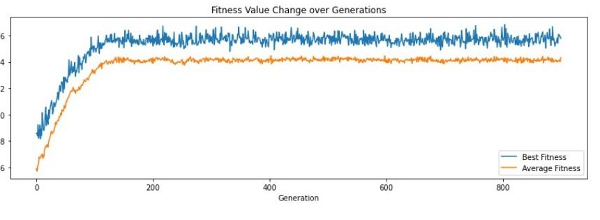
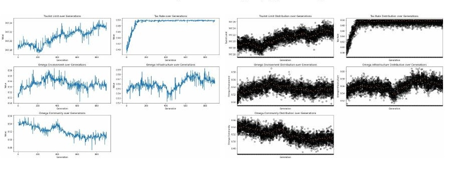
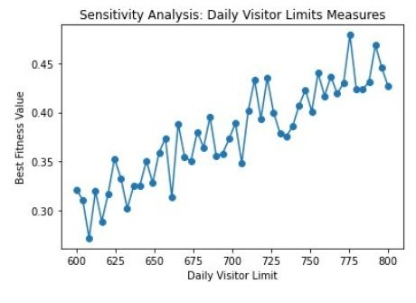
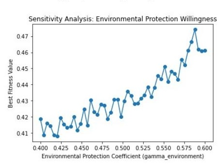
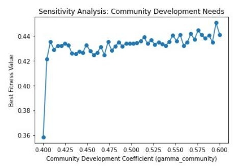
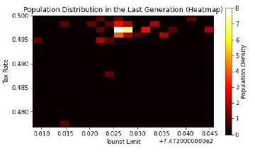
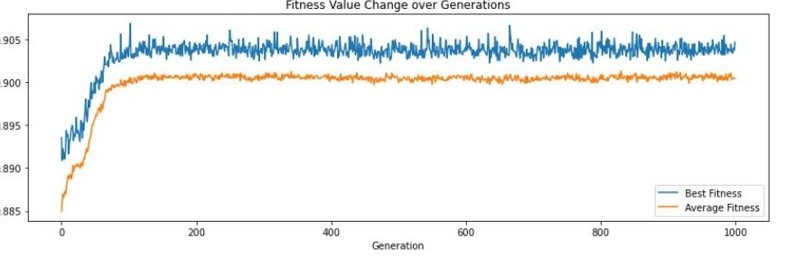

1 当游客增长成为城市难题
朱诺拥有冰川、海湾和独特的原住民与淘金文化，也是大型邮轮的重要停靠地。旅游带来收入和就业，但当游客在短时间内集中到达，城市会同时面对交通、住宿、废弃物处理和生态保护压力。
原论文以 2023 年为背景：朱诺接待约 160 万名邮轮游客，旅游收入约 3.75 亿美元，单日峰值超过 2 万人。游客规模扩大以后，冰川生态承受压力，公共交通和住房供应更加紧张，居民也可能因为拥堵、价格上涨和生活空间被挤占而降低对旅游的支持。
这不是简单的“游客越多越好”或“游客越少越好”的选择。游客是收入来源，也是环境与基础设施的使用者；税收又可能被重新投入保护和公共服务。因此，政策问题应当被写成一个动态系统：在给定资源和社区承载能力下，什么样的游客规模与公共投入组合更值得选择？

2 从旅游收入到综合可持续性
模型没有把收入作为唯一目标，而是同时跟踪四个维度。第一是旅游收入，它由游客数量和人均消费共同决定；第二是环境压力，包括冰川资源消耗与游客产生的碳排放；第三是基础设施压力，反映住宿、交通、能源和废弃物处理等公共资源的负荷；第四是社区满意度，概括居民对拥堵、住房成本、价格和社区项目收益的综合感受。
四个维度并非相互独立。游客增加通常提高收入，也提高环境和设施压力；税收收入可以反过来支撑环境保护、基础设施改善和社区发展。模型因此把“收入—再投入—承载能力”作为一个反馈回路。
K(t)→旅游收入
R(t)→税收与公共投入
T(t)→环境、设施与社区
E(t), L(t), S(t)

这种多目标视角的价值在于，它让政策讨论从单一的游客数量控制转向“增长的收益是否足以承担增长的成本”。同时也要注意，原文中的权重和转化系数是建模参数，而不是经过调查估计的居民偏好。
3 一个具有反馈的旅游系统
在朱诺案例中，游客数量 K(t) 随时间增长，并受到目的地资源、公共设施和政策措施的影响。旅游收入可写成游客数量与人均消费 I 的乘积：
政府从旅游收入中获得税收，税收的一部分用于环境、基础设施和社区项目。游客数量每增加一单位，都会带来一定的资源消耗或压力；公共投入则通过转化系数降低压力、修复资源或提高社区满意度。例如，环境压力可以概括为：
其中，m 和 p 是游客对资源与碳排放的负担系数，γ1 表示投入转化为环保效果的程度，ω1 表示相应的政策权重。基础设施压力和社区满意度具有相似结构：游客带来负担，公共投入带来缓冲。
S(t) = 100 − s · K(t) + γ3 · ω3 · T(t) / 10000
因此，政策并非只有“限制游客”这一种工具。控制增长速度、设定游客上限、提高税收、提高公共投入效率，都可能改变系统轨迹。不过，模型能否给出可信建议，取决于系数是否有可靠的现实校准。

4 如何寻找更好的政策组合
模型将旅游收入作为正向目标，同时对环境压力、基础设施压力和社区满意度进行惩罚或奖励，形成综合适应度。一般形式可写为：
为了避免收入规模掩盖其他维度，原文先进行最大—最小标准化，再加入约束：环境压力不能超过上限，基础设施压力不能超过承载上限，社区满意度不能低于最低水平。
遗传算法把一组政策参数视为一个“个体”。每一代先计算每个个体的适应度，再保留表现较好的方案进行选择；随后通过交叉组合两个方案，并用小概率变异保持搜索多样性。重复这一过程，算法会在参数空间中寻找适应度更高的候选方案。

5 模拟结果告诉了我们什么
原论文在 100、500 和 1000 次迭代下报告了候选参数。结果显示，算法能够在不同运行次数下找到相对稳定的方案，适应度在迭代初期提升较快，随后趋于平稳。这说明给定目标函数和参数范围下，遗传算法具有收敛表现。
| 迭代次数 | 游客上限 Klimit | 税率 | 环境权重 ω1 | 基础设施权重 ω2 | 社区权重 ω3 | Fitness |
|---|---|---|---|---|---|---|
| 100 | 747.197 | 0.387 | 0.512 | 0.545 | 0.544 | 0.381 |
| 500 | 747.212 | 0.497 | 0.540 | 0.555 | 0.512 | 0.460 |
| 1000 | 747.236 | 0.497 | 0.533 | 0.566 | 0.505 | 0.458 |
表中的数字应被理解为原模型运行下的候选解。它们不能直接转化为朱诺应当执行的游客上限或税率，因为模型的时间尺度、参数单位和现实政策口径还需要进一步核对。

一个值得保留的结果是：游客数量管理、环保投入和社区投入并非互相替代的政策。它们共同影响目标函数，但作用路径不同。游客上限直接改变使用规模；投入转化系数则决定税收能否转化为资源修复与公共服务。
6 哪些政策杠杆更重要
敏感性分析分别改变游客上限、环境保护转化系数和社区发展转化系数，观察最佳适应度的变化。游客上限提高时，模型适应度总体上升，但这并不意味着无限提高上限。它反映的是当前参数范围内，额外收入对综合目标的边际贡献仍然较大；一旦超过承载能力，结论可能改变。



环境保护转化系数提高时，适应度总体改善，说明在该模型中，环保投入能够抵消部分游客带来的环境压力。社区发展系数的曲线相对平稳，意味着在设定区间内它对综合适应度的边际变化较小；这不能被解释为社区福利不重要，而是说明需要更精细的居民福利指标才能识别其价值。
7 从朱诺到海南：模型能否迁移
模型的可迁移性来自结构，而不是来自一组固定数字。朱诺的关键资源是冰川生态、邮轮交通和地方社区；海南则可以把特色资源替换为海滩景观与文化遗产，把共同使用的社会资源替换为交通设施。游客数量、资源质量和公共投入之间的反馈关系仍可保留，但每个系数都需要重新估计。
| 维度 | 朱诺 | 海南示例 |
|---|---|---|
| 特色资源 | 冰川、海湾、原住民与淘金文化 | 海滩景观、文化遗产 |
| 共同使用资源 | 住宿、交通、能源和废弃物系统 | 交通设施与旅游服务网络 |
| 主要环境约束 | 冰川保护与碳排放 | 海滩质量、海洋生态与文化遗产保护 |
原论文还提出将游客较少的景点纳入推广模型。与其把所有新增游客继续集中到热门景点，不如在承载能力允许的地方发展替代路线，通过区域分流实现更均衡的旅游分布。
8 政策启示与模型边界
把容量管理与收入再投入结合起来
政策不宜只关注游客数量，也应关注税收如何被转化为环保、基础设施和社区项目。游客上限需要结合季节、邮轮到港节奏和公共设施使用量动态调整，税收政策也需要评估其对需求和居民福利的影响。
把模拟结果当作决策框架
遗传算法的价值在于帮助政策制定者比较复杂组合，而不是替代现实中的协商与评估。模型输出应当与居民调查、交通数据、生态监测和财政执行信息结合，才能形成可操作的政策方案。
承认模型的边界
原模型采用线性关系、相对稳定的短期环境与社会条件，并假设税收能够有效、无浪费地投入指定领域。现实中游客具有季节性，政策存在实施滞后，居民偏好也并非一个固定的满意度指标。未来研究需要加入多目的地空间网络、季节变化、经济冲击和更细的游客行为数据。
技术附录
符号与核心方程
K(t) 为游客数量，R(t) 为旅游收入，T(t) 为税收，E(t) 为环境压力，L(t) 为基础设施压力，S(t) 为社区满意度，ωj 为公共投入权重，γj 为投入转化系数。统一目标函数为收入标准化值减去环境与基础设施压力标准化值，并加上社区满意度标准化值。
R(t)=I·K(t)
遗传算法伪代码
初始化政策参数种群；对每个个体计算游客数量、收入、环境压力、基础设施压力和社区满意度；根据适应度进行轮盘赌选择；以交叉概率组合父代；以变异概率加入随机扰动并截断到允许区间；重复设定代数后，输出适应度最高的候选方案。
附加图：末代种群热力图与海南结果


作品说明与资料
本网页是 MCM/ICM 2025 Team 2512884 竞赛论文的中文研究性改编。原团队以朱诺为背景构建可持续旅游模型，并使用遗传算法与 Python 进行求解；我的工作重点是建模与编程。页面保留原论文的核心图表和模型逻辑，补充了面向网页读者的解释与证据边界说明。
原论文在 AI 使用说明中记录了 ChatGPT（GPT-4）用于生成初始思路、寻找旅游数据渠道和理解遗传算法基本逻辑。AI 输出未被当作现实数据或最终结论，网页中的事实、模型设定和结果均以原论文为准。